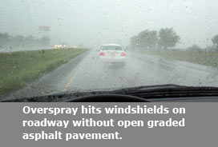
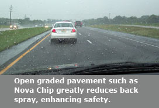

Open Graded Pavement

Discover The Nova Chip Difference
Open graded pavements are made unlike other asphalt pavements. These use one size of rock (to be determined in the mix design process) and a high-grade asphalt cement. This varies from other asphalt pavements that are made with aggregates that vary in size from large down to a fine sand aggregate.
By using only one size aggregate and asphalt cement, the aggregates bind together creating a web of interlocking pores that allow water to flow through the pavement. During rain, instead of pooling on the surface or running off of it to a curb and gutter line or storm sewers, the water drains through the surface and out to the sides. On city streets and highways in high traffic volume the overspray from one car to the car behind it is greatly reduced, enhancing safety.
Learn more by viewing Discover The Nova Chip Difference.
You can also find out more about the industry’s efforts by reading NAPA’s Sustainability Report – Black and Green: Sustainable Asphalt, Now & Tomorrow.
NAPA also provides an excellent overview on the Benefits of Asphalt.
Did you know . . .
- In 2007 West Contracting made a commitment to open graded surface courses by purchasing our own Nova Chip Machine. We have since installed hundreds of miles of open graded surface course asphalt throughout Missouri.
- Open graded asphalt surfaces allow rainwater to drain through the pavement surface, reducing the spray by vehicles onto one another.
- Open graded pavements are proven to be environmentally friendly and create safer roadways. One Texas DOT study showed replacing a conventional mix roadway with an open graded surface in a high accident area reduced the traffic fatalities from 93 percent to 86 percent.